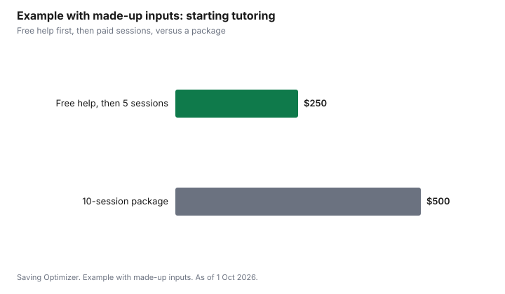

Kids · Canada
Tutoring in Canada: When It's Worth Paying and Free Help to Try First
Before paying for tutoring in Canada, try the free help: a conversation with the teacher, the school's extra help, a public library homework club, and free provincial programs such as Ontario's TVO Learn Mathify, which offers free one-to-one online math tutoring for grades 4 to 12. Paid tutoring is worth it when you have a specific goal, such as passing a course or closing a gap the school has identified, and a set number of sessions to judge it by. If your child has a learning disability, CRA can allow tutoring as a medical expense when a medical practitioner certifies that it is needed.
Key takeaways
- Ask the teacher first: what is the gap, and what would help? Ask about school extra help.
- Free options: library homework help, free online practice, and provincial programs. TVO Learn Mathify offers free 1:1 online math tutoring for Ontario students in grades 4 to 12.
- Paid tutoring: set a goal, a number of sessions and a check-in date before you commit to a package.
- CRA medical expense rule: tutoring for a person with a learning disability or mental impairment can qualify when certified as necessary and paid to an unrelated tutoring business.
- Example with made-up inputs: 10 paid sessions at $50 cost $500; a month of free help first costs $0.
Start with the teacher and the school
The teacher knows where the gap is. Ask what your child is missing, what has been tried, and what would help at home. Many schools run extra help at lunch or after school, peer tutoring, or a resource teacher. If you suspect a learning disability, ask how the school assesses it; an individual education plan can bring support at no cost.
Free help to try first
| Option | What it is | Where to ask |
|---|---|---|
| School extra help | Teacher or peer help at school | The teacher or office |
| Library homework help | Homework clubs or online tutoring through the library | Your public library |
| Free online practice | Video lessons and exercises | The teacher can suggest sites that match the course |
| TVO Learn Mathify (Ontario) | Free 1:1 online math tutoring, grades 4 to 12, by Ontario Certified Teachers | mathify.tvolearn.com; requires an Ontario Education Number |
Other provinces and boards have their own programs; ask the school or search your education ministry. University and college students often volunteer through tutoring programs at community centres.
When paid tutoring is worth it
Paid tutoring fits when the free options are not enough and there is a clear goal: a course grade, a provincial exam, a skill the teacher has named. Before signing up, agree on the goal, how many sessions to try, and when to check progress. Avoid long prepaid packages until the first few sessions show results. Compare a private tutor, a tutoring centre and online tutoring by cost per session and by what the tutor will report back.
The medical expense rule for learning disabilities
CRA's medical expenses guide lists tutoring services as an eligible medical expense in specific conditions: the person has a learning disability or an impairment in mental functions, a medical practitioner certifies in writing that the tutoring is necessary, the tutoring is in addition to the primary education, and it is paid to a person ordinarily in the business of providing such services who is not related to the patient. Keep receipts and the certification.
Step by step: choosing a paid tutor
- Write down the goal with the teacher: the skill, course or exam, and how you will know it improved.
- Decide on format: in person, online, private or small group.
- Ask candidates about their experience with the grade and curriculum in your province.
- Ask for a trial session and how they report progress.
- Agree on a set number of sessions, then review with the teacher.
- Pay per session or for a short block until results show.
- For a tutor working with your child alone, ask about a police or vulnerable sector check and meet in a shared space at home.
Tutoring formats compared
| Format | Upside | Trade-off |
|---|---|---|
| Private tutor at home | One-on-one attention; flexible | Cost per session; vetting is up to you |
| Tutoring centre | Structured program; assessments | Packages and contracts; less flexible |
| Online tutoring | More choice; no travel | Needs a quiet space and a working device |
| Small group | Lower cost per child | Less individual attention |
| University or college student | Often lower rates | Experience varies |
Learning disabilities and school supports
If tutoring is not closing a gap, ask the school about an assessment. Schools in Canada can provide an individual education plan (the name varies by province) with accommodations at no cost. Private psychoeducational assessments are expensive and may be partly covered by workplace health benefits; ask your plan. If a learning disability is diagnosed, the medical expense rule can apply to certified tutoring, and some families may qualify for the disability tax credit, depending on the impairment.
Common mistakes
- Paying for tutoring without asking the teacher what the gap is.
- Buying a long package before a trial.
- Choosing a tutor who does not know your province's curriculum.
- Skipping progress check-ins.
- Not asking about assessments when tutoring is not helping.
Example with made-up inputs: free help first
These numbers are an example with made-up inputs, not tutoring rates. A family tries a month of free help: school extra help twice a week and a free online tutoring program. Cost: $0. The teacher reports progress but one gap remains, and the family books five paid sessions at $50, $250, instead of a 10-session package at $500 bought up front.
| Approach | Sessions | Cost |
|---|---|---|
| Free help for a month, then 5 paid sessions | 5 paid | $250 |
| 10-session package up front | 10 paid | $500 |

Sources
- TVO Learn Mathify, as of 1 Oct 2026. Free 1:1 online math tutoring for Ontario grades 4 to 12 with Ontario Certified Teachers; Ontario Education Number required.
- CRA, RC4065 Medical expenses, as of 1 Oct 2026. Tutoring services for a person with a learning disability or mental impairment, certified as necessary, supplementary to primary education, paid to an unrelated person ordinarily in that business.
- The session counts and rates in the example table and chart are made-up inputs.
Frequently asked questions
Is there free tutoring in Canada?
Often, yes. Ask about school extra help and peer tutoring, check your public library for homework help, and look for provincial programs. In Ontario, TVO Learn Mathify offers free one-to-one online math tutoring for grades 4 to 12.
When is paid tutoring worth it?
When free help is not enough and you have a specific goal, such as a course grade or a skill the teacher has identified. Agree on the goal, a number of sessions and a check-in date before committing to a package.
Can tutoring be claimed as a medical expense?
CRA allows tutoring for a person with a learning disability or mental impairment when a medical practitioner certifies it is necessary, it is in addition to regular schooling, and it is paid to an unrelated person in the business of tutoring.
What is TVO Mathify?
TVO Learn Mathify is free one-to-one online math tutoring for Ontario students in grades 4 to 12, delivered by Ontario Certified Teachers. Students need an Ontario Education Number.
Should I buy a tutoring package?
Try a few sessions first. Long prepaid packages lock in the cost before you know whether the tutor is helping.
How do I choose a tutor?
Set a goal with the teacher, ask about experience with your province's curriculum, book a trial session, agree on how progress will be reported, and start with a short block of sessions.
What if tutoring is not helping?
Ask the school about an assessment. An individual education plan can bring accommodations at no cost, and a diagnosis may open other supports.
Researched and drafted with AI assistance and fact-checked against official Canadian sources. How we create content.
Disclosure: Tutoring services are described as an offer type; none is named or ranked. TVO Learn Mathify is named as a public program, not a partner. Saving Optimizer may earn a commission if a partner link is added later; no partnership is claimed. Education only. This is not tax advice.